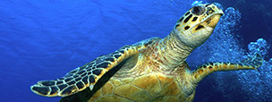
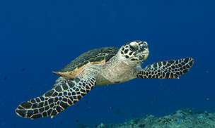
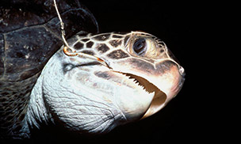
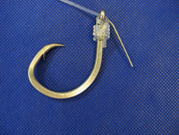

Save the Hawksbill Turtle!

Why They Matter:
Hawksbills help maintain the health of coral reefs. As they remove prey such as sponges from the reef's surface, they provide better access for reef fish to feed. They also have cultural significance and tourism value. For example, for local residents in the Coral Triangle, the flow of visitors who come to admire turtles is a vital source of income.
The Facts:
- Status: Critically Endangered
- Scientific Name: Eretmochelys imbricata
- Weight: 90-150 pounds
- Length: 30-35 inches
- Habitats: Oceans
Hawksbills are named for their narrow, pointed beak. They also have a distinctive pattern of overlapping scales on their shells that form a serrated-look on the edges. These colored and patterned shells make them highly-valuable and commonly sold as tortoiseshell in markets.
Hawksbills are found mainly throughout the world's tropical oceans, predominantly in coral reefs. They feed mainly on sponges by using their narrow pointed beaks to extract them from crevices on the reef, but also eat sea anemones and jellyfish. Sea turtles are the living representatives of a group of reptiles that has existed on Earth and travelled our seas for the last 100 million years. They are a fundamental link in marine ecosystems and help maintain the health of coral reefs and sea grass beds.

The Threats:
- Fisheries Bycatch: Hawksbills are particularly susceptible to entanglement in gillnets and accidental capture on fishing hooks. Sea turtles need to reach the surface to breathe, and therefore many drown once caught. Known as bycatch, this is a serious threat to hawksbill turtles. As fishing activity expands, this threat is more of a problem.

- Illegal Wildlife Trade: Despite their current protection under the Convention on International Trade in Endangered Species of Wild Fauna and Flora (CITES) and many national laws, there is still a disturbingly large amount of illegal trade in hawksbill shells and products. They are much sought after throughout the tropics for their beautiful brown and yellow carapace plates that are manufactured into tortoiseshell items for jewelry and ornaments. In recent decades, eastern Asia has provided an eager market for tortoiseshell.
Like other sea turtles, hawksbills are threatened by the loss of nesting and feeding habitats, excessive egg collection, fishery-related mortality, pollution, and coastal development. However, they are most threatened by wildlife trade.
What WWF is Doing:
- Adressing Wildlife Trade: WWF works with communities to reduce turtle harvesting and local trade in the Coral Triangle. In Malaysia, we help raise awareness about the threats hawksbills face and communicate the importance of protecting them. Exploitation of turtles is often driven by a lack of economic choices so WWF works to develop alternative livelihoods so that local people are no longer dependent on turtle products for income. WWF also works to stop the illegal trade of hawksbill products around the world through TRAFFIC, the wildlife trade monitoring network. We also train and equip local rangers to protect turtles from poaching and patrol nesting beaches.
- Eliminating Bycatch: WWF aims to reduce turtle bycatch by working with fisheries to switch to more turtle-friendly fishing hooks ("circle" hooks) and advocates for the use of special turtle excluder devices in nets. We run an international competition, known as Smart Gear, to attract creative new ways to solve bycatch problems and advance the best of those ideas. Winning devices have been designed to minimize the bycatch of turtles on tuna longlines and help turtles avoid gillnets. We track turtle movements using satellite to help prevent future interactions between fisheries and turtles. And we work with fishermen to save turtles caught in fishing gear.

- Protecting Sea Turtle Habitat: WWF works around the world to establish marine protected areas (MPA) to ensure sea turtles have a safe place to nest, feed and migrate freely. We encourage governments to strengthen legislation and provide funding for sea turtle protection. WWF also supports the monitoring and patrolling of turtle nests in many parts of the world to equip local turtle conservationists. This often leads to ecotourism opportunities and offers alternative livelihoods.
- Satellite Tracking: Satellite telemetry allows researchers to track sea turtles as they swim from place to place. These satellite tags do not harm the turtles in any way and are designed to eventually fall off. The data will tell us where important feeding areas are, help us understand migration patterns, and anticipate where turtles may come in contact with fisheries and their gear.
Source: Word Wild Life Org: Critically Endangered Hawksbill Turtle